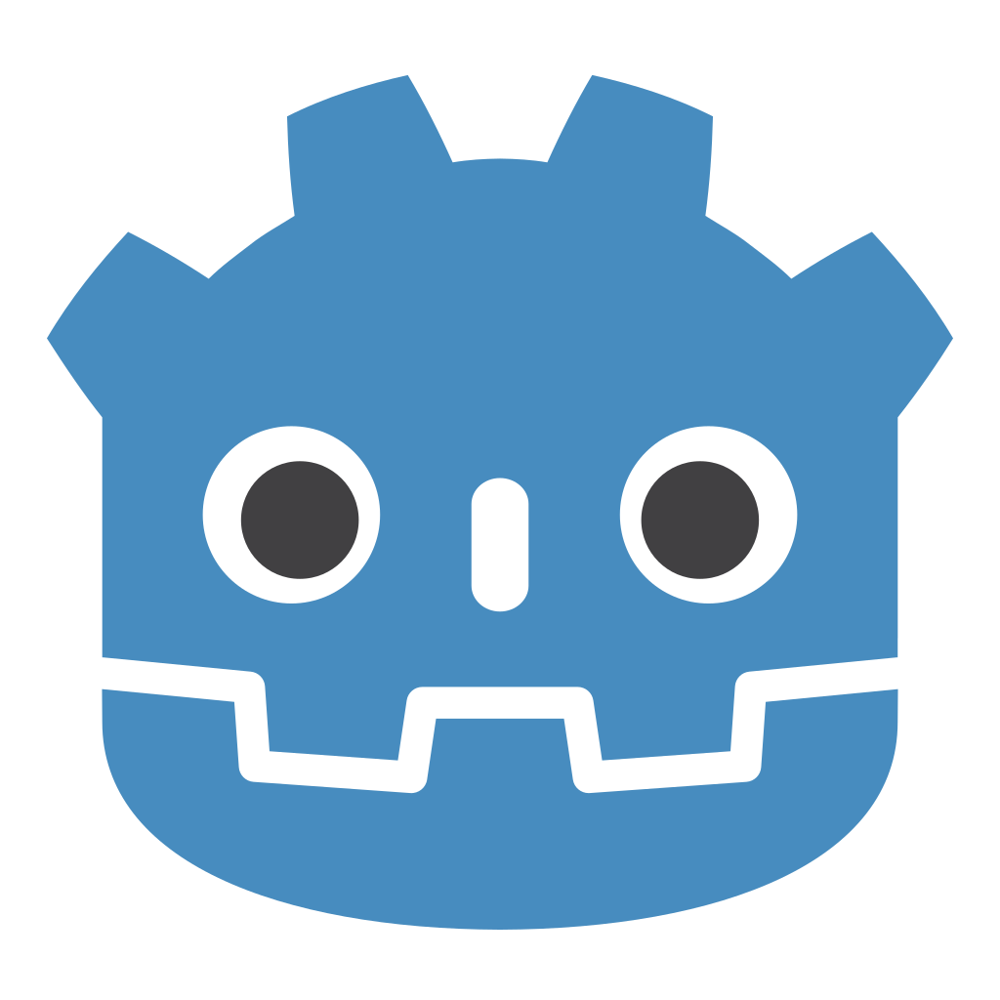
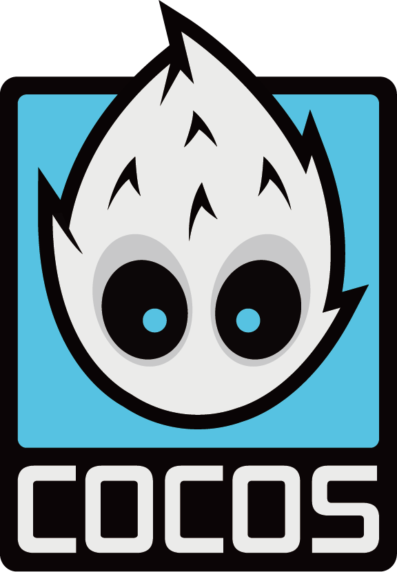

Lunar power
10 关 2D 推箱解谜。把能量箱推到供电节点，逐步点亮月面基地。
工作原理
控制台、控制面与执行机器各司其职。每个步骤在独立的 Git worktree 中运行，产出以提交保存，后续步骤接续上游提交继续创作。
浏览器 · Next.js
设计工作流、选择引擎、为步骤指派 Agent，审批关键节点并下载试玩包与验收报告。
Go · PostgreSQL
保存工作流与运行记录，按步骤依赖派单；租约调度、心跳监测、断线重试，并对产物做 SHA-256 校验。
执行机器 · Mac
领取任务，在独立 Git worktree 中调用 Agent CLI 与游戏引擎，回传提交、日志与构建产物。本地未提交的改动始终保留。
确认需求与分工
base · HEAD场景与资源
接续 a1b2c3d接入资源与逻辑
接续 e4f5a6b引擎测试 + 导出
接续 c7d8e9f只读核对产出
同一提交审批后发布
试玩包下载提交保存在项目本机的 refs/agentrib/runs/ 下；QA 与构建核对同一提交，确保验收的就是将要交付的版本。
核心亮点
从需求到试玩包，每一步都可追溯、可验收、可继续。
每个步骤在独立 worktree 中运行，产出以提交保存。后续步骤从上游提交继续，美术与程序的成果可以合并接入。
16 种 Agent CLI 适配器，按步骤指派不同 Agent。控制台显示每台 Runner 检测到的 CLI 与可用状态。
Godot 项目执行无界面测试，并用 Web 预设导出试玩包。产物经 SHA-256 校验后可在运行详情下载。
QA 步骤以只读工具验收，核对提交、测试记录与产物，给出 PASS 结论后才放行交付。
租约与心跳保障任务不丢失，断线自动重试。失败后可从失败处继续，保留已通过的步骤、审批与产物。
与产品 Agent 对话梳理需求，一键生成简报并填入工作流，让制作从清晰的需求开始。
制作流程
在工作流中选择游戏引擎，编排制作步骤，并配置任务说明、执行方式和依赖。
任务按项目需要选用。运营分析和社区客服需要接入相应的数据源或平台。
引擎支持
在工作流编辑器中选择引擎。计划接入的引擎可以先保存到工作流，适配器上线后即可派单。

已接入
project.godot 项目可执行无界面测试，并使用 Web 预设导出试玩包。
计划接入
.uproject 项目，面向 C++ 与蓝图开发流程。
计划接入
Assets/ 与 Packages/ 项目结构，面向 C# 开发流程。

计划接入
assets/ 与 package.json 项目结构，面向 TypeScript 开发流程。
Agent 生态
在执行机器上安装并登录所需的 CLI。控制台会显示每台 Runner 检测到的 Agent。
claudecodexopencodeopenclawhermespiagycodebuddygrokkimiqodercliqoderclicndshompmcodezcode游戏作品
10 关 2D 推箱解谜。把能量箱推到供电节点，逐步点亮月面基地。
更多作品将陆续展示。已发布的版本会在这里提供网页入口或客户端下载链接。